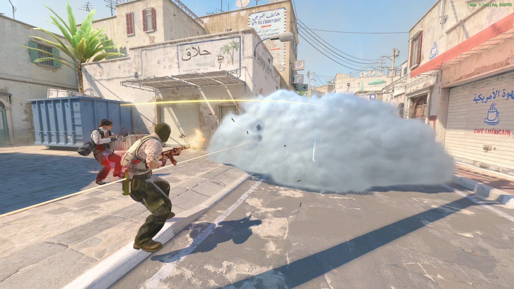
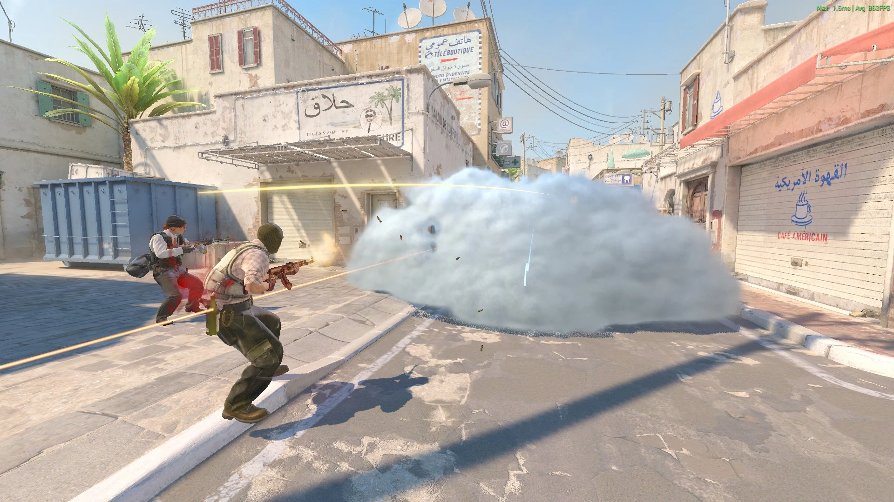

Max video settings for better picture quality
WARNING: It will consume more performance resources. You should choose the High preset if your PC isn't powerful enough.
Optimal video settings, adjusted several unimportant settings

Medium quality, lacking some detail optimization, sufficient for normal game performance

Will get more performance frames without making the game visual look bad

Sacrifice more image quality details in exchange for more frames, disable anti-aliasing

The quality setting will be as low as possible, and Super Resolution will be used
Not recommended. Very low preset have super resolution and it will cause the game screen to be blurred, which is not conducive to your aiming at distant targets. you should choose LOW unless the game has bad performance.
2025 CS2-Configmaster
CS2-Configmaster is not sponsored by and affiliated with mastercomfig.
Valve, the Valve logo, Steam, the Steam logo, Counter-Strike, CSGO, the Counter-Strike logo, Source 2, the Source 2 logo are trademarks and/or registered trademarks of Valve Corporation in the U.S. and/or other countries. All other trademarks are property of their respective owners in the US and other countries.
CS2-Configmaster is not sponsored, endorsed, licensed by, or affiliated with Valve Corporation.